Intelligence
Eve. Our central intelligence and long-term research focus.
 ATOMIC IONSPIRESTUDIOS
INDEPENDENT BY DESIGN
ATOMIC IONSPIRESTUDIOS
INDEPENDENT BY DESIGN
ATOMIC IONSPIRE / V3
From the first line of code to entirely new worlds. Intelligence, systems, software, and games engineered under one independent studio.

Distinct products. One studio language. Each project is built to become more capable over time.
An original Atomic Ionspire Studios video game currently in development.
Explore Lockridge ↗Shape humanity's future through decisions that ripple across a changing world.
Explore project ↗Lead a nation through pressure, priorities, and consequence.
Explore project ↗A role-playing adventure that evolves around what you choose to do.
Explore project ↗Eve is being developed as the private, local-first technical mind and future command layer of Atomic Ionspire Studios.
IONspire OS is a foundation for AI development, software creation, and a distinct desktop experience.
Eve. Our central intelligence and long-term research focus.
IONspire OS. A foundation for control, creation, and development.
Focused applications built around practical problems.
Original games where decisions shape the experience.
Questions about our work, product support, or what comes next.
support@atomicionspire.com